4.2“教育数智思维语言的理想相对树根”视角的“教育框架与案例”树枝树叶之二（面向人文哲学的课程为例）
第3章表 3‑9所示“教育数智思维语言的理想相对树根”的建议定义，可以用作原理框架-理论框架，派生/应用成为案例 4‑2树枝树叶 [[1]]、[[2]]，也即教育教学的工程实现案例-实践检验案例。并且稍作变换、简化，以便排版。期望解决“教育数智思维”难以“人机统一”的这一痛点。
案例 4‑2“教育数智思维语言的理想相对树根”视角的“教育框架与案例”树枝树叶之二（面向人文哲学的课程为例）【“作业测验”驱动“目录导航的课文↔面向一对一的学生课前自主学习↔面向一对多的教师课堂答疑教学”（“目录导航的课文”主选“作业测验”采集数据、“面向一对一的学生课前自主学习”主选“作业测验”实施学习、“面向一对多的教师课堂答疑教学”主选“作业测验”的“答案解释”链接实施教学的字符文档/图像PPT/视频/2D/3D的视媒/听媒/触媒/嗅媒/味媒）】【“本翻转课堂案例”兼容“传统课堂案例”】：“整体框架与案例”的“开始、中途、结束”中的“客户端、互动、服务端”的（初创方/他创方/自创方的定性/布尔/定量的）人物对象思维语言【对象类型的声明定义/封装拆装/派生继承/单态多态/拷贝引用→属性方法/数据读写/内容方法/知识技能的声明定义→语句块的语句流程的顺序-分支-循环/表达式/词汇/字符→数字01本质（对象类型诞生对象实例）（对象实例主谓宾互动）】的四层平台的五层MVC的总共九层（线性为本-树体主导-网状辅助的结构/关系/模式/架构）（树体的树根默认是System.Object对象类型）的字典驱动文档的创新研发的工程四个环节的VS-GitHub-Copilot/Word/Edge-DevTools/SSMS/FoundryLocal等等IDE（团队协同的解决方案的源码文件/语法组件/人物对象类型的字典组件）的迭代直至需求粒度或者迭代直至CPU数字01本质粒度……工程四个环节例如：【（在此Word表格流程表述的用户的）客观需求环节→（另建Word表格流程表述的VS解决方案项目的文件组织的）主观设计环节→（另建Word表格流程表述的VS解决方案项目的文件代码的）主观开发环节→（另建Word表格流程表述的VS解决方案项目的文件代码的部署发布成为客户需求产品的）主观交付环节】……四层平台的五层MVC的总共九层之中：【“VS中的客户端的人脑智能的中英Prompt.Agent.LLM.AIGC思维语言←YAML-HTML-MD文件←Skills文件夹←项目←解决方案”（本书必需深入的顶层表象的第五层MVC/最高层MVC）(VS中可以编译成为第一平台/最低平台的数字01.CPU思维语言)(面向隐式System.Object对象类型/面向对象实例)（面向Token相关的语义向量距离的概率性的定量匹配的择优筛选）（面向宽松追问趋同的便于自主闭环学习-便于自主适应-便于自我进化）（面向强排版顺序的缩进嵌套）（面向纸张打印的文档调用字典）（面向CLI-Console视图V的面向单个源码文件的JIT编译运行）(面向驾驭工程)】←人机统一→【“VS中的服务端的计算机的C#.ASP.Net思维语言→CS文件→MCP.Nuget包→项目→解决方案”（本书必需深入的中层衔接的第四平台/最高平台）(VS中可以编译成为第一平台/最低平台的数字01.CPU思维语言)(面向显式System.Object对象类型/面向对象类型)（面向Token无关的字面标量顺序的确定性的定性匹配的宁缺勿滥）（面向严谨寡言确定的难以自主闭环学习-难以自主适应-难以自我进化）（面向弱排版顺序的括号嵌套）（面向屏幕显示的字典驱动文档）（面向GUI-Window视图V的面向解决方案文件的整体的AOT编译运行）(面向软件工程)】……本书涉及的硬件软件的五层MVC，即使不是VS中的C#.Net思维语言开发的，也可看作可由VS中的C#.Net思维语言开发，只是运行性能可能有所不同。这样有利于VS中的C#.Net思维语言作为主导，贯穿“数智思维”的“四层平台的五层MVC”这一核心……[[3]]
| 【注：本案例，基于表 3‑9所示“教育数智思维语言的理想相对树根”，派生继承寻根拓展/单态多态寻根拓展/迭代细化成为的树枝树叶。该案例的框架，相对传统教育案例框架来说，融入了数字人工智能思维，尤其是融入了四层平台的五层MVC的思维，更为复杂了一些，但确实是追求本书“前言”的章节介绍概述的当前数字人工智能时代的创新……当然，具体实施时，案例的框架也可作一些简化（例如，去除框架的一些冗余，以便简化排版，但又默认框架的存在）】 （单击可以查看https://www.alipan.com/s/g1LgXLG2n1K/，本书案例的工程文档LongDocNavigatorWithContents_Book.docx） 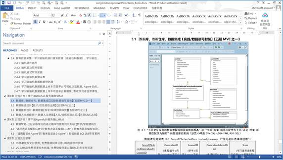 ↓ 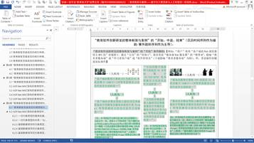 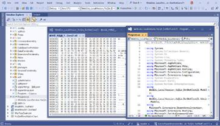 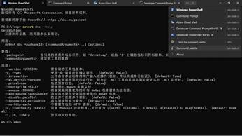 上图所示：基于当前数智时代的教育需求【例如，第4章所述的案例 4‑1~案例 4‑2】【注：Windwos文件资源管理器的右击菜单中选择“Open in Terminal”，则可体验视图V的TUI-CLI-CUI←OCR互相转换→GUI-CUA，尤其是本书相关的Windows CLI、DotNet CLI、Word CLI、VS CLI、Edge CLI】，继承利用第5章所述的“Word”作为IDE编辑“人脑Prompt.AIGC思维语言代码”←人机统一→“VS”作为IDE编辑“C#.Net思维语言”，同时，继承利用相关的众多教育科研软件，创新研发一个第6章所述的“本书教育科研软件案例”的四层平台的的五层MVC。 ↓ “本书教育科研软件案例”的四层平台的的五层MVC的视图V五层合为一层的示例之一如下图【6.3节所述，五层MVC视角的视图V（涉及“C#思维语言”映射“MD/HTML/JPG/MP4/SVG/X3D/CSS/JS/Razor-CSHTML/XAML等等思维语言”）（本系统目录导航上传字符媒体主导的.doc教材课文文件/.doc作业测验文件，链接阿里云盘中的视频/2D/3D等等多媒体作为辅助）】。 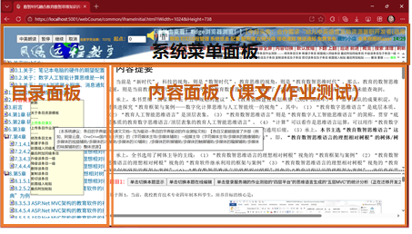 ↓ “本书教育科研软件案例”的四层平台的的五层MVC的控制C五层合为一层的示例之一如下图【6.4节所述，五层MVC视角的控制C（涉及“C#思维语言”映射“HTTP→TCP→IP→数字01等等协议思维语言”）（编程时VS查看C#，运行时Edge的DevTools查看HTTP）】 ↓
↓ “本书教育科研软件案例”的四层平台的的五层MVC的模型M第一层的示例之一如下图【6.5.1节所述，“五层MVC视角的教育课程成绩原始数据根基”的“字面-标量-顺序匹配作为主导/语义-向量-距离匹配作为辅助”的数据库的案例（涉及C#映射CSV/XML-JSON-YAML/RDF/SQL）、“五层MVC视角的教育课程成绩原始数据根基的数据库”集成进入“教育统计学数据根基的数据仓库”的“字面-标量-顺序匹配作为主导/语义-向量-距离匹配作为辅助”的案例（涉及C#映射CSV/XML-JSON-YAML/RDF/SQL）】 ↓ 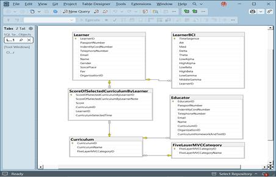  ↓ “本书教育科研软件案例”的四层平台的的五层MVC的模型M第二层的示例之一如下图【6.5.2节所述，五层MVC视角的教育课程成绩数据库、数据仓库的确定性的多维总计/平均的一个案例（涉及C#映射MDX）】 ↓ 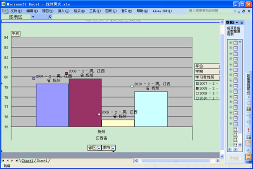 ↓ “本书教育科研软件案例”的四层平台的的五层MVC的模型M第三层的示例之一如下图【6.5.2节所述，五层MVC视角的教育课程成绩数据库、数据仓库的概率性推断预测函数，以便预测将来成绩走向的一个案例（涉及C#映射DMX）】 ↓ 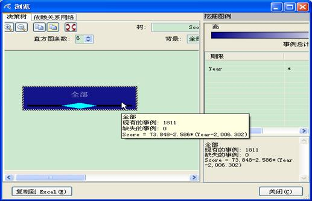 ↓ “本书教育科研软件案例”的四层平台的的五层MVC的模型M第四层的示例之一如下图【6.5.4节所述，五层MVC视角的教育课程成绩数据库、数据仓库的选课数据的概率性推断学习者客户端选课兴趣，以便调整课程设置决策的一个案例（涉及C#映射DMX）】 ↓ 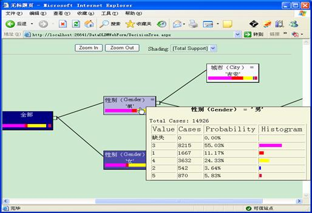 ↓ “本书教育科研软件案例”的四层平台的的五层MVC的模型M第五层的示例之一如下图【6.5.5节所述，五层MVC视角的学习者，评判教育科研大语言模型生成的作业测验的准确性，进而获得“哲学智能建构生成”分数的案例之一（类似哲学思辨之类课程的考试）（“字面-标量-顺序匹配作为辅助/语义-向量-距离匹配作为主导”的字符/图像/视频/2D/3D作为主导媒体）（涉及C#映射Prompt）】 ↓
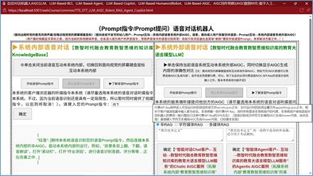
| ||||||||||||||
| “教育教学整体框架与案例”的“开始、中途、结束”（日历时间序列作为辅助/事件跳转序列作为主导的过程状态）(第0分钟~第50分钟为例）： | ||||||||||||||
|
| ||||||||||||||
| 客户端“作业测验驱动的学生自主学习”的“开始、中途、结束”（日历时间序列作为辅助/事件跳转序列作为主导的过程状态） 【案例：学生自主学习的“单选题”的答案解释部分（https://jbhuang99.github.io/WebEdu_LocalVersion_YuQin_DotNetCore2.1/ASPDotNet_MVC_YuQin/ASPDotNet_MVC_YuQin/wwwroot/webCourse/common/iframeInitial.html?text=1736956409094）→超链接→教师答疑教学的“字符文档/图像PPT/视频/2D/3D视媒”（https://www.alipan.com/s/dhknGRnDR9L）】 | 服务端“作业测验驱动的教师答疑教学”的“开始、中途、结束”（日历时间序列作为主导/事件跳转序列作为辅助的过程状态） 【案例：教师答疑教学的“字符文档/图像PPT/视频/2D/3D视媒”（https://www.alipan.com/s/dhknGRnDR9L）→链接于→学生自主学习的“单选题”的答案解释部分（https://jbhuang99.github.io/WebEdu_LocalVersion_YuQin_DotNetCore2.1/ASPDotNet_MVC_YuQin/ASPDotNet_MVC_YuQin/wwwroot/webCourse/common/iframeInitial.html?text=1736956409094）】 | |||||||||||||
| 【作业测验驱动的学生课外自主学习的事件跳转之一】 （开始事件）（实时确定时间序列） （注：本案例的导入、教与学目标的提出） | 【作业测验驱动的教师课堂答疑教学的时间序列之一】（开始时间第0~第5分钟）（实时确定事件序列） （注：本案例的导入、教与学目标的提出） | |||||||||||||
| 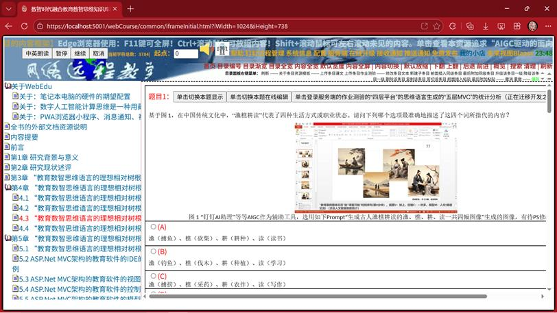 本部分单选题，可以继承利用“本文自主研发的教育科研软件案例”，RAG生成而来。Prompt在此选用如下： “渔樵耕读定义”的一道四个选项的单选题，适合用于考试测验。 并且在最后附上本题考查的数智思维的五层MVC这一核心要素（A代表实践/B代表技术/C代表科学/D代表人文/E代表哲学）。 | 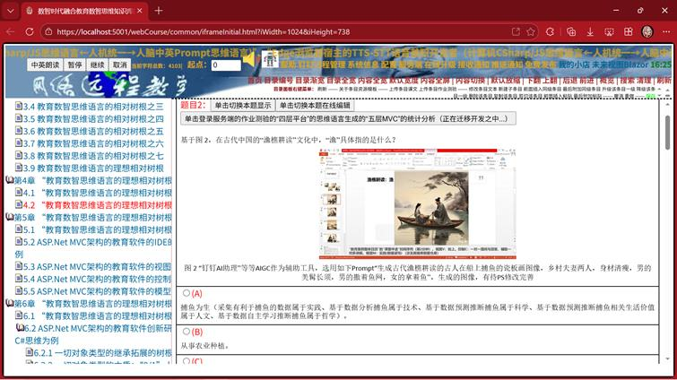 本部分PPT，可以继承利用“钉钉AI搜问/钉钉AI助理/钉钉千问App”，AIGC生成。Prompt在此选用如下： “生成古人渔樵耕读的渔、樵、耕、读一共四幅图像”。 并且在PPT中附上本部分考查的数智思维的五层MVC这一核心要素（实践/技术/科学/人文/哲学）。 | |||||||||||||
| 【作业测验驱动的学生课外自主学习的事件跳转之二】 （中途事件）（实时确定时间序列） | 【作业测验驱动的教师课堂答疑教学的时间序列之二】（中途时间第5~第20分钟）（实时确定事件序列） | |||||||||||||
| 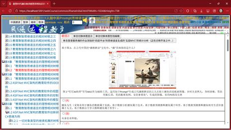 本部分单选题，可以继承利用“本文自主研发的教育科研软件案例”，RAG生成而来。Prompt在此选用如下： “渔樵耕读定义”之中的“渔”的一道四个选项的单选题，适合用于考试测验。 并且在最后附上本题考查的数智思维的五层MVC这一核心要素（A代表实践/B代表技术/C代表科学/D代表人文/E代表哲学）。 | 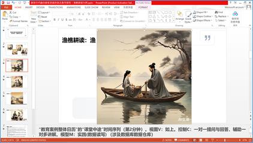 本部分PPT，可以继承利用“钉钉AI搜问/钉钉AI助理/钉钉千问App”，AIGC生成。Prompt在此选用如下： “生成古代渔樵耕读的古人在船上捕鱼的瓷板画图像，乡村夫妻两人，身材清瘦，男的美髯长须，男的撒着鱼网，女的拿着鱼”。 并且在PPT中附上本部分考查的数智思维的五层MVC这一核心要素（实践/技术/科学/人文/哲学）。 | |||||||||||||
| 【作业测验驱动的学生课外自主学习的事件跳转之三】 （中途事件）（实时确定时间序列） | 【作业测验驱动的教师课堂答疑教学的时间序列之三】（中途时间第20~第30分钟）（实时确定事件序列） | |||||||||||||
| 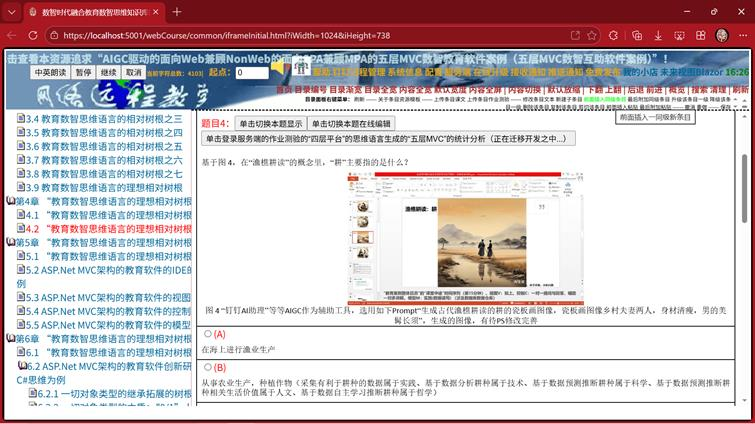 本部分单选题，可以继承利用“本文自主研发的教育科研软件案例”，RAG生成而来。Prompt在此选用如下： “渔樵耕读定义”之中的“樵”的一道四个选项的单选题，适合用于考试测验。 并且在最后附上本题考查的数智思维的五层MVC这一核心要素（A代表实践/B代表技术/C代表科学/D代表人文/E代表哲学）。 | 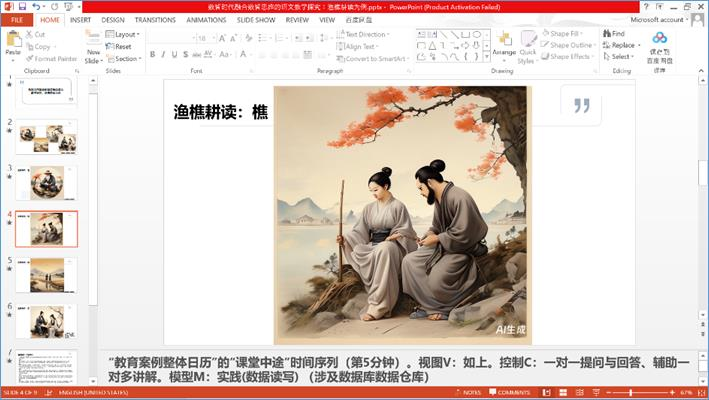 本部分PPT，可以继承利用“钉钉AI搜问/钉钉AI助理/钉钉千问App”，AIGC生成。Prompt在此选用如下： “生成古代渔樵耕读的古人上山砍柴的瓷板画图像，乡村夫妻两人，身材清瘦，男的美髯长须，男的拿着柴刀砍柴，女的在绑柴”。 并且在PPT中附上本部分考查的数智思维的五层MVC这一核心要素（实践/技术/科学/人文/哲学）。 | |||||||||||||
| 【作业测验驱动的学生课外自主学习的事件跳转之四】 （中途事件）（实时确定时间序列） | 【作业测验驱动的教师课堂答疑教学的时间序列之四】（中途时间第30~第40分钟）（实时确定事件序列） | |||||||||||||
|
本部分单选题，可以继承利用“本文自主研发的教育科研软件案例”，RAG生成而来。Prompt在此选用如下： “渔樵耕读定义”之中的“耕”的一道四个选项的单选题，适合用于考试测验。 并且在最后附上本题考查的数智思维的五层MVC这一核心要素（A代表实践/B代表技术/C代表科学/D代表人文/E代表哲学）。 | 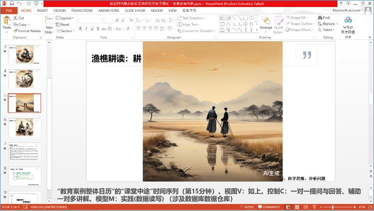 本部分PPT，可以继承利用“钉钉AI搜问/钉钉AI助理/钉钉千问App”，AIGC生成。Prompt在此选用如下： “生成古代渔樵耕读的耕的瓷板画图像，瓷板画图像乡村夫妻两人，身材清瘦，男的美髯长须” 并且在PPT中附上本部分考查的数智思维的五层MVC这一核心要素（实践/技术/科学/人文/哲学）。 | |||||||||||||
| 【作业测验驱动的学生课外自主学习的事件跳转之五】 （结束事件）（实时确定时间序列） （本案例的重点、难点） | 【作业测验驱动的教师课堂答疑教学的时间序列之五】（结束时间第40~第50分钟）（实时确定事件序列） （本案例的重点、难点） | |||||||||||||
| 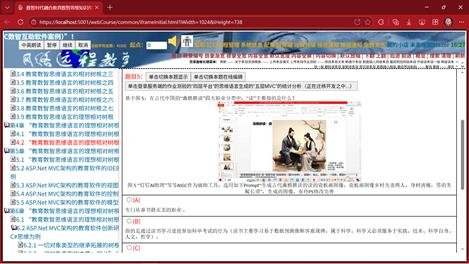 本部分单选题，可以继承利用“本文自主研发的教育科研软件案例”，RAG生成而来。Prompt在此选用如下： “渔樵耕读定义”之中的“读”的一道四个选项的单选题，适合用于考试测验。 并且在最后附上本题考查的数智思维的五层MVC这一核心要素（A代表实践/B代表技术/C代表科学/D代表人文/E代表哲学）。 | 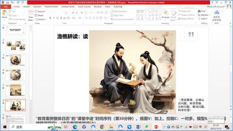 本部分PPT，可以继承利用“钉钉AI搜问/钉钉AI助理/钉钉千问App”，AIGC生成。Prompt在此选用如下： “生成古代渔樵耕读的读的瓷板画图像，瓷板画图像乡村夫妻两人，身材清瘦，男的美髯长须”。 并且在PPT中附上本部分考查的数智思维的五层MVC这一核心要素（实践/技术/科学/人文/哲学）。 | |||||||||||||